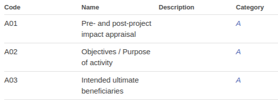

I’m looking at the Document Category codes , which are split between categories for activity and organisational level documents - eg:

All these categories are missing a Description field – which might be useful to help publishers determine exactly which category to choose
My question is whether there is any background material in terms of where these codes were derived from. I don’t think these codes are CRS related, for example - and they seem to have been in place since the start of IATI time…
Paging @OJ_ @bill_anderson @Herman @theo.sande @YohannaLoucheur @JohnAdams
Additionally - has anyone in the community written extra guidance around document categories…? @SJohns @ariag @rolfkleef @amys ?
(elsewhere, there were some posts about the relevance and use of these codes to CSOs: here & here)